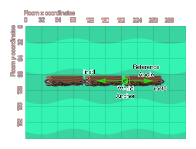

This function creates a weld joint between two physics instances.
The weld joint is designed to attach two fixtures together in a strong, yet flexible bond. The weld joint will permit flexing between the two joined fixtures but without the stretching associated with, for example, a distance joint, and will always try to "spring" back to the reference angle when put under any stress or load.
You define the point in the room where the joint should be created, as well as the angle that you wish the joint to try and maintain at all times, as shown in the image below:

As you can see, the anchor points are specified as room coordinates so care must be taken when defining them, especially if the instances are being created at the same time as the joints rather than being placed in the room through the Room Editor. You should also realise that the joints are created independently of the size of the sprite of the instances or the fixtures they have attached. So, if you create a weld joint somewhere other than the origin of the instance, it is still valid and will constrain the two instances relative to the position at which it was created.Since the weld joint is flexible and will bend and flex when under any stress, you can set the oscillation frequency (in Hz) as well as the damping ratio for the joint to get different effects - you may need to play with these values to fine tune them and it is recommended that you start off with smaller values and increment them until you get the effect that you desire.
If you set the col value to true then the two instances can interact and collide with each other but only if they have collision events. If it is set to false, however, they will not collide no matter what.
physics_joint_weld_create(inst1, inst2, anchor_x, anchor_y, ref_angle, freq_hz, damping_ratio, col)
| Argument | Type | Description |
|---|---|---|
| inst1 | Object Instance | The first instance to connect with the joint |
| inst2 | Object Instance | The second instance to connect with the joint |
| anchor_x | Real | The x coordinate for the joint, within the game world |
| anchor_y | Real | The y coordinate for the joint, within the game world |
| ref_angle | Real | The joint angle to maintain, in degrees |
| freq_hz | Real | This is the oscillation frequency for the joint, in hertz |
| damping_ratio | Real | This is the damping ratio for the joint |
| col | Boolean | Whether the two instances can collide (true) or not (false) |
Create Event
var _p_id = noone;
var _o_id = noone;
var _fix = physics_fixture_create();
physics_fixture_set_box_shape(_fix, 64, 32);
for (var i = 0; i < 5; i++)
{
_o_id = instance_create_layer(x + (128 * i), y, "Instances", obj_bridge_part);
_o_id.fix_bound = physics_fixture_bind(_fix, _o_id);
if (i > 0)
{
physics_joint_weld_create(_p_id, _o_id, x + (128 * i) - 64, y, 0, 10, 12, true);
}
_p_id = _o_id;
}
physics_fixture_delete(_fix);
Destroy Event
with(obj_bridge_part)
{
physics_remove_fixture(id, fix_bound);
instance_destroy();
}
The above code shows how to use a weld joint to connect multiple physics instances.
In the Create event, a fixture is first created using and its shape is set to a 128 x 64 box shape. Then, a number of instances of an object obj_bridge_part are created in a for loop. The fixture is bound to each new instance using physics_fixture_bind and all instances except the first one are connected to the previous one using a weld joint created with physics_joint_weld_create. Finally, the fixture is deleted from memory.
In the Destroy event, all instances of obj_bridge_part are destroyed and the previously bound fixtures with them. Note that the weld joints aren't deleted as this is done automatically by GameMaker.